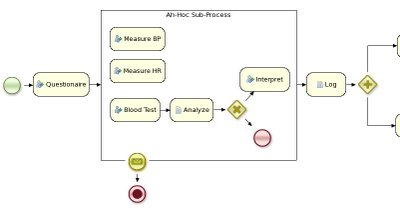
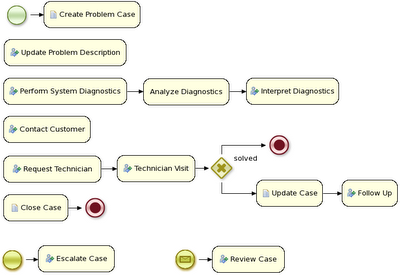
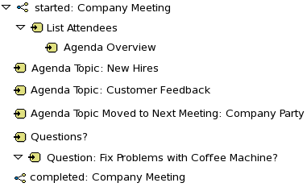

Towards Case Management
The term case management is often used in that context. I’m not going to try and give a precise definition of what it might or might not mean [1,2], but it refers to the basic idea that many applications in the real world cannot really be described completely from start to finish (including all possible paths, deviations, exceptions, etc.). Case management takes a different approach: instead of trying to model what should happen from start to finish, let’s give the end user the flexibility to decide what should happen at runtime. In its most extreme form for example, case management doesn’t even require any process definition at all. Whenever a new case comes in, the end user can decide what to do next based on all the case data.
A typical example can be found in healthcare (clinical decision support to be more precise), where care plans can be used to describe how patients should be treated in specific circumstances, but people like general practitioners still need to have the flexibility to add additional steps and deviate from the proposed plan, as each case is unique. And there are similar examples in claim management, helpdesk support, etc.
So, should we just throw away our BPM system then? I don’t think so! Even at its most extreme form (where we don’t model any process up front), you still need a lot of the other features a BPM system (usually) provides: there still is a clear need for audit logs, monitoring, coordinating various services, human interaction (e.g. using task forms), analysis, etc. And, more importantly, many cases are somewhere in between, or might even evolve from case management to more structured business process over time (when we for example try to extract common approaches from many cases). If we can offer flexibility as part of our processes, can’t we let the users decide how and where they would like to apply it?
Let me give you two examples that show how you can add more and more flexibility to your processes. The first example shows a care plan that shows the tasks that should be performed when a patient has high blood pressure. While a large part of the process is still well-structured, the general practitioner can decide himself which tasks should be performed as part of the sub-process. And he also has the ability to add new tasks during that period, tasks that were not defined as part of the process, or repeat tasks multiple times, etc. The process uses an ad-hoc sub-process to model this kind of flexibility, possibly augmented with rules or event processing to help in deciding which fragments to execute.

The second example actually goes a lot further than that. In this example, an internet provider could define how cases about internet connectivity problems will be handled by the internet provider. There are a number of actions the case worker can select from, but those are simply small process fragments. The case worker is responsible for selecting what to do next and can even add new tasks dynamically. As you can see, there is not process from start to finish anymore, but the user is responsible for selecting which process fragments to execute.



{kind=link}
{kind=link}
{kind=link}